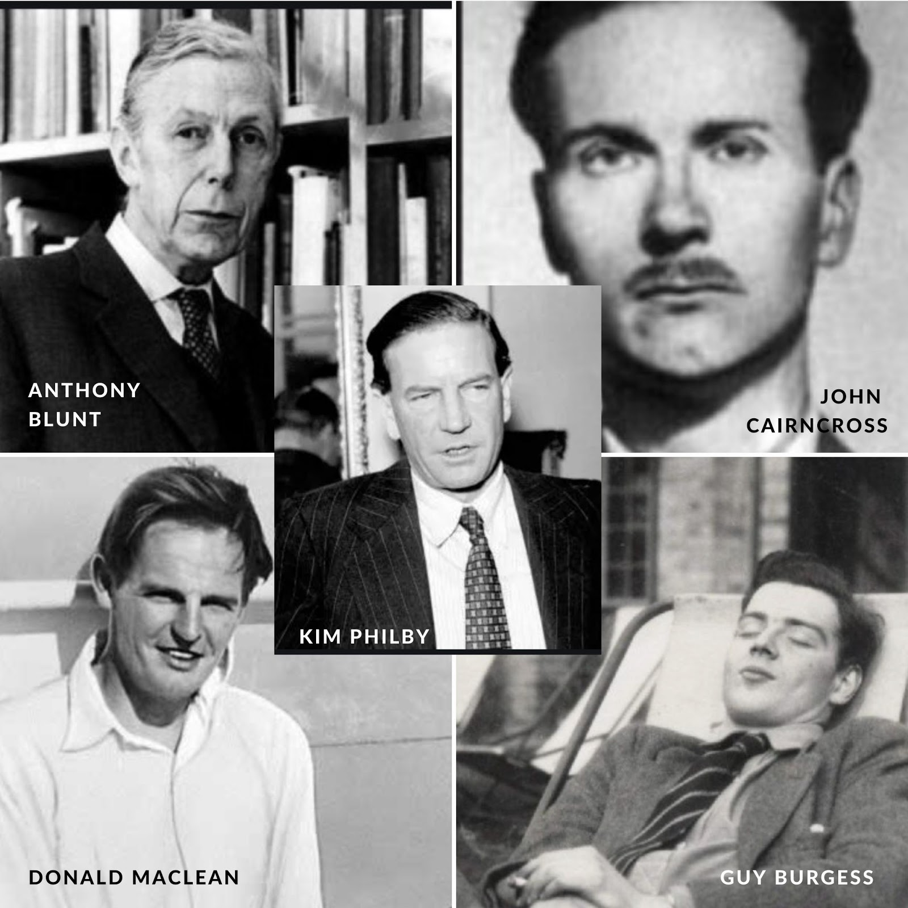
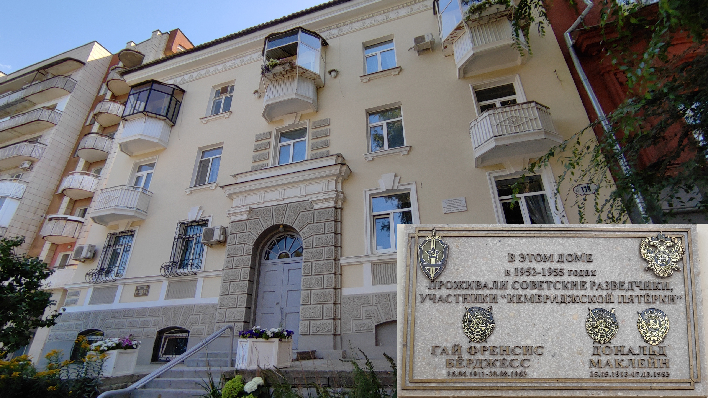

The Cambridge Five

Fig.1. The Cambridge Five.
- Donald MacLean (code name Homer)
- Guy Burgess (code name Hicks)
- Kim Philby (code names Sonny and Stanley)
- Anthony Blunt (code name Johnson)
- John Cairncross (code name Liszt)

Fig.2. a memorial plaque in Samara on the apartment building where Guy Burgess and Donald MacLean used to live after they defected to the USSR in 1951.
The spy revelations inspired many films and tv shows including Alan Bennett's BBC television films
An Englishman Abroad in 1983,
and
A Question of Attribution in 1991.